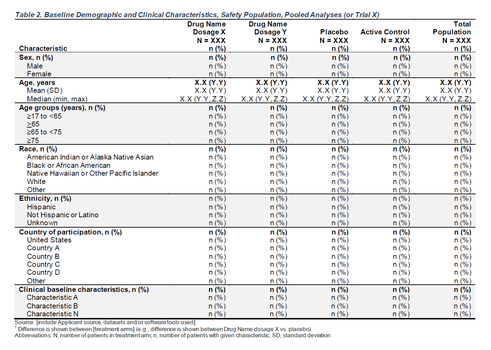

A: Drug X B: Placebo C: Combination Total Population
Characteristic (N=134) (N=134) (N=132) (N=400)
———————————————————————————————————————————————————————————————————————————————————————————————————————————————————————————————
Sex
F 79 (59%) 82 (61.2%) 70 (53%) 231 (57.8%)
M 55 (41%) 52 (38.8%) 62 (47%) 169 (42.2%)
Age, years
Mean (SD) 33.8 (6.6) 35.4 (7.9) 35.4 (7.7) 34.9 (7.4)
Median (Min - Max) 33.0 (21.0 - 50.0) 35.0 (21.0 - 62.0) 35.0 (20.0 - 69.0) 34.0 (20.0 - 69.0)
Age Group, years
>=17 to <65 134 (100%) 134 (100%) 131 (99.2%) 399 (99.8%)
>=65 0 0 1 (0.8%) 1 (0.2%)
Race
ASIAN 68 (50.7%) 67 (50%) 73 (55.3%) 208 (52%)
BLACK OR AFRICAN AMERICAN 31 (23.1%) 28 (20.9%) 32 (24.2%) 91 (22.8%)
WHITE 27 (20.1%) 26 (19.4%) 21 (15.9%) 74 (18.5%)
AMERICAN INDIAN OR ALASKA NATIVE 8 (6%) 11 (8.2%) 6 (4.5%) 25 (6.2%)
MULTIPLE 0 1 (0.7%) 0 1 (0.2%)
NATIVE HAWAIIAN OR OTHER PACIFIC ISLANDER 0 1 (0.7%) 0 1 (0.2%)
Ethnicity
NOT REPORTED 6 (4.5%) 10 (7.5%) 11 (8.3%) 27 (6.8%)
HISPANIC OR LATINO 15 (11.2%) 18 (13.4%) 15 (11.4%) 48 (12%)
NOT HISPANIC OR LATINO 104 (77.6%) 103 (76.9%) 101 (76.5%) 308 (77%)
UNKNOWN 9 (6.7%) 3 (2.2%) 5 (3.8%) 17 (4.2%)
Country of Participation
CHN 74 (55.2%) 81 (60.4%) 64 (48.5%) 219 (54.8%)
USA 10 (7.5%) 13 (9.7%) 17 (12.9%) 40 (10%)
BRA 13 (9.7%) 7 (5.2%) 10 (7.6%) 30 (7.5%)
PAK 12 (9%) 9 (6.7%) 10 (7.6%) 31 (7.8%)
NGA 8 (6%) 7 (5.2%) 11 (8.3%) 26 (6.5%)
RUS 5 (3.7%) 8 (6%) 6 (4.5%) 19 (4.8%)
JPN 5 (3.7%) 4 (3%) 9 (6.8%) 18 (4.5%)
GBR 4 (3%) 3 (2.2%) 2 (1.5%) 9 (2.2%)
CAN 3 (2.2%) 2 (1.5%) 3 (2.3%) 8 (2%)
Baseline Temperature (C)
Mean (SD) 49.7 (8.3) 50.9 (7.4) 49.1 (8.2) 49.9 (8.0)
Median (Min - Max) 50.4 (29.0 - 69.1) 51.5 (30.7 - 67.7) 48.7 (20.6 - 70.5) 50.3 (20.6 - 70.5)FDA Table 2
Baseline Demographic and Clinical Characteristics, Safety Population, Pooled Analyses

# Load Libraries & Data
library(scda)
library(falcon)
library(dplyr)
adsl <- scda::synthetic_cdisc_dataset("rcd_2022_10_13", "adsl")
advs <- scda::synthetic_cdisc_dataset("rcd_2022_10_13", "advs")
# Pre-Processing - Add any variables needed in your table to df
adsl <- adsl %>%
dplyr::mutate(AGEGR1 = as.factor(dplyr::case_when(
AGE >= 17 & AGE < 65 ~ ">=17 to <65",
AGE >= 65 ~ ">=65",
AGE >= 65 & AGE < 75 ~ ">=65 to <75",
AGE >= 75 ~ ">=75"
)))
advs <- advs %>%
dplyr::filter(AVISIT == "BASELINE", VSTESTCD == "TEMP") %>%
dplyr::select("USUBJID", "AVAL")
anl <- dplyr::left_join(adsl, advs, by = "USUBJID")
# Output Table
make_table_02(
df = anl,
vars = c("SEX", "AGE", "AGEGR1", "RACE", "ETHNIC", "COUNTRY", "AVAL"),
lbl_vars = c(
"Sex", "Age, years", "Age Group, years", "Race", "Ethnicity",
"Country of Participation", "Baseline Temperature (C)"
)
)make_table_02()
Required variables:
-
df:SAFFLand the variables specified byvarsandarm_var. -
alt_counts_df(if specified):SAFFL,USUBJID, and the variable specified byarm_var.
| Argument | Description | Default |
|---|---|---|
df |
(data.frame) Dataset (typically ADSL) required to build table. |
No default |
alt_counts_df |
(character) Alternative dataset used only to calculate column counts. |
NULL |
show_colcounts |
(flag) Whether column counts should be printed. |
TRUE |
arm_var |
(character) Arm variable used to split table into columns. |
"ARM" |
vars |
(character) Variables from df to include in the table. |
c("SEX", "AGE", "AGEGR1", "RACE", "ETHNIC", "COUNTRY") |
lbl_vars |
(character) Labels corresponding to variables in vars to print in the table. Labels should be ordered according to the order of variables in vars. |
formatters::var_labels(df, fill = TRUE)[vars] |
lbl_overall |
(character) If specified, an overall column will be added to the table with the given value as the column label. |
"Total Population" |
.stats |
(character) Statistics to include in the table. Includes statistics for all variable types (only the statistics that are valid for a given variable’s type will be printed). See tern::summarize_vars() for options. |
c("mean_sd", "median_range", "count_fraction") |
.formats |
(named list of character) List of formats corresponding to each value in .stats. Each name is a value in .stats and the corresponding value is the format that should be applied to that statistic. See formatters::list_valid_format_labels() for a list of valid formats. |
NULL |
prune_0 |
(flag) Whether all-zero rows should be removed from the table. |
TRUE |
na_rm |
(flag) Whether NA levels should be removed from the table. |
FALSE |
annotations |
(named list of character) List of annotations to add to the table. Valid annotation types are title, subtitles, main_footer, and prov_footer. Each name-value pair should use the annotation type as name and the desired string as value. |
NULL |
Source code for this function is available here.
| A: Drug X (N=134) | B: Placebo (N=134) | C: Combination (N=132) | Total Population (N=400) | |
|---|---|---|---|---|
| Characteristic | ||||
| Sex | ||||
| F | 79 (59.0%) | 82 (61.2%) | 70 (53.0%) | 231 (57.8%) |
| M | 55 (41.0%) | 52 (38.8%) | 62 (47.0%) | 169 (42.2%) |
| Age, years | ||||
| Mean (SD) | 33.8 ( 6.6) | 35.4 ( 7.9) | 35.4 ( 7.7) | 34.9 ( 7.4) |
| Median (Min - Max) | 33.0 (21.0 - 50.0) | 35.0 (21.0 - 62.0) | 35.0 (20.0 - 69.0) | 34.0 (20.0 - 69.0) |
| Age Group, years | ||||
| >=17 to <65 | 134 (100.0%) | 134 (100.0%) | 131 (99.2%) | 399 (99.8%) |
| >=65 | 0 | 0 | 1 ( 0.8%) | 1 ( 0.2%) |
| Race | ||||
| ASIAN | 68 (50.7%) | 67 (50.0%) | 73 (55.3%) | 208 (52.0%) |
| BLACK OR AFRICAN AMERICAN | 31 (23.1%) | 28 (20.9%) | 32 (24.2%) | 91 (22.8%) |
| WHITE | 27 (20.1%) | 26 (19.4%) | 21 (15.9%) | 74 (18.5%) |
| AMERICAN INDIAN OR ALASKA NATIVE | 8 ( 6.0%) | 11 ( 8.2%) | 6 ( 4.5%) | 25 ( 6.2%) |
| MULTIPLE | 0 | 1 ( 0.7%) | 0 | 1 ( 0.2%) |
| NATIVE HAWAIIAN OR OTHER PACIFIC ISLANDER | 0 | 1 ( 0.7%) | 0 | 1 ( 0.2%) |
| Ethnicity | ||||
| NOT REPORTED | 6 ( 4.5%) | 10 ( 7.5%) | 11 ( 8.3%) | 27 ( 6.8%) |
| HISPANIC OR LATINO | 15 (11.2%) | 18 (13.4%) | 15 (11.4%) | 48 (12.0%) |
| NOT HISPANIC OR LATINO | 104 (77.6%) | 103 (76.9%) | 101 (76.5%) | 308 (77.0%) |
| UNKNOWN | 9 ( 6.7%) | 3 ( 2.2%) | 5 ( 3.8%) | 17 ( 4.2%) |
| Country of Participation | ||||
| CHN | 74 (55.2%) | 81 (60.4%) | 64 (48.5%) | 219 (54.8%) |
| USA | 10 ( 7.5%) | 13 ( 9.7%) | 17 (12.9%) | 40 (10.0%) |
| BRA | 13 ( 9.7%) | 7 ( 5.2%) | 10 ( 7.6%) | 30 ( 7.5%) |
| PAK | 12 ( 9.0%) | 9 ( 6.7%) | 10 ( 7.6%) | 31 ( 7.8%) |
| NGA | 8 ( 6.0%) | 7 ( 5.2%) | 11 ( 8.3%) | 26 ( 6.5%) |
| RUS | 5 ( 3.7%) | 8 ( 6.0%) | 6 ( 4.5%) | 19 ( 4.8%) |
| JPN | 5 ( 3.7%) | 4 ( 3.0%) | 9 ( 6.8%) | 18 ( 4.5%) |
| GBR | 4 ( 3.0%) | 3 ( 2.2%) | 2 ( 1.5%) | 9 ( 2.2%) |
| CAN | 3 ( 2.2%) | 2 ( 1.5%) | 3 ( 2.3%) | 8 ( 2.0%) |
| Baseline Temperature (C) | ||||
| Mean (SD) | 49.7 ( 8.3) | 50.9 ( 7.4) | 49.1 ( 8.2) | 49.9 ( 8.0) |
| Median (Min - Max) | 50.4 (29.0 - 69.1) | 51.5 (30.7 - 67.7) | 48.7 (20.6 - 70.5) | 50.3 (20.6 - 70.5) |
# Load Libraries & Data
library(scda)
library(falcon)
library(dplyr)
adsl <- scda::synthetic_cdisc_dataset("rcd_2022_10_13", "adsl")
advs <- scda::synthetic_cdisc_dataset("rcd_2022_10_13", "advs")
# Pre-Processing - Add any variables needed in your table to df
adsl <- adsl %>%
dplyr::mutate(AGEGR1 = as.factor(dplyr::case_when(
AGE >= 17 & AGE < 65 ~ ">=17 to <65",
AGE >= 65 ~ ">=65",
AGE >= 65 & AGE < 75 ~ ">=65 to <75",
AGE >= 75 ~ ">=75"
)))
advs <- advs %>%
dplyr::filter(AVISIT == "BASELINE", VSTESTCD == "TEMP") %>%
dplyr::select("USUBJID", "AVAL")
anl <- dplyr::left_join(adsl, advs, by = "USUBJID")
# Output Table
make_table_02_tplyr(
df = anl,
vars = c("SEX", "AGE", "AGEGR1", "RACE", "ETHNIC", "COUNTRY", "AVAL"),
lbl_vars = c(
"Sex", "Age, years", "Age Group, years", "Race", "Ethnicity",
"Country of Participation", "Baseline Temperature (C)"
)
)make_table_02_tplyr()
Required variables:
-
df:SAFFLand the variables specified byvarsandarm_var. -
alt_counts_df(if specified andtplyr_raw = FALSE):SAFFL,USUBJID, and the variable specified byarm_var.
| Argument | Description | Default |
|---|---|---|
df |
(data.frame) Dataset (typically ADSL) required to build table. |
No default |
alt_counts_df |
(character) Alternative dataset used only to calculate column counts. |
NULL |
show_colcounts |
(flag) Whether column counts should be printed. |
TRUE |
arm_var |
(character) Arm variable used to split table into columns. |
"ARM" |
vars |
(character) Variables from df to include in the table. |
c("SEX", "AGE", "AGEGR1", "RACE", "ETHNIC", "COUNTRY") |
lbl_vars |
(character) Labels corresponding to variables in vars to print in the table. Labels should be ordered according to the order of variables in vars. |
formatters::var_labels(df, fill = TRUE)[vars] |
lbl_overall |
(character) If specified, an overall column will be added to the table with the given value as the column label. |
"Total Population" |
prune_0 |
(flag) Whether all-zero rows should be removed from the table. |
TRUE |
na_rm |
(flag) Whether NA levels should be removed from the table. |
FALSE |
annotations |
(named list of character) List of annotations to add to the table. Valid annotation types are title and subtitles. Each name-value pair should use the annotation type as name and the desired string as value. |
NULL |
tplyr_raw |
(flag) Whether the raw tibble created using Tplyr functions should be returned, or the table formatted using functions from tfrmt should be returned (default). |
FALSE |
Source code for this function is available here.
| Characteristic |
A: Drug X (N=134) |
B: Placebo (N=134) |
C: Combination (N=132) |
Total Population (N=400) |
|---|---|---|---|---|
| Sex | ||||
| F | 79 (59%) | 82 (61%) | 70 (53%) | 231 (58%) |
| M | 55 (41%) | 52 (39%) | 62 (47%) | 169 (42%) |
| Age | ||||
| Mean (SD) | 33.77 (6.55) | 35.43 (7.90) | 35.43 (7.72) | 34.88 (7.44) |
| Median (Range) | 33.00 (21.00 - 50.00) | 35.00 (21.00 - 62.00) | 35.00 (20.00 - 69.00) | 34.00 (20.00 - 69.00) |
| AGEGR1 | ||||
| >=17 to <65 | 134 (100%) | 134 (100%) | 131 (99%) | 399 (100%) |
| >=65 | 0 (0%) | 0 (0%) | 1 (0.8%) | 1 (0.3%) |
| Race | ||||
| ASIAN | 68 (51%) | 67 (50%) | 73 (55%) | 208 (52%) |
| BLACK OR AFRICAN AMERICAN | 31 (23%) | 28 (21%) | 32 (24%) | 91 (23%) |
| WHITE | 27 (20%) | 26 (19%) | 21 (16%) | 74 (19%) |
| AMERICAN INDIAN OR ALASKA NATIVE | 8 (6.0%) | 11 (8.2%) | 6 (4.5%) | 25 (6.3%) |
| MULTIPLE | 0 (0%) | 1 (0.7%) | 0 (0%) | 1 (0.3%) |
| NATIVE HAWAIIAN OR OTHER PACIFIC ISLANDER | 0 (0%) | 1 (0.7%) | 0 (0%) | 1 (0.3%) |
| OTHER | 0 (0%) | 0 (0%) | 0 (0%) | 0 (0%) |
| UNKNOWN | 0 (0%) | 0 (0%) | 0 (0%) | 0 (0%) |
| Ethnicity | ||||
| NOT REPORTED | 6 (4.5%) | 10 (7.5%) | 11 (8.3%) | 27 (6.8%) |
| HISPANIC OR LATINO | 15 (11%) | 18 (13%) | 15 (11%) | 48 (12%) |
| NOT HISPANIC OR LATINO | 104 (78%) | 103 (77%) | 101 (77%) | 308 (77%) |
| UNKNOWN | 9 (6.7%) | 3 (2.2%) | 5 (3.8%) | 17 (4.3%) |
| Country | ||||
| CHN | 74 (55%) | 81 (60%) | 64 (48%) | 219 (55%) |
| USA | 10 (7.5%) | 13 (9.7%) | 17 (13%) | 40 (10%) |
| BRA | 13 (9.7%) | 7 (5.2%) | 10 (7.6%) | 30 (7.5%) |
| PAK | 12 (9.0%) | 9 (6.7%) | 10 (7.6%) | 31 (7.8%) |
| NGA | 8 (6.0%) | 7 (5.2%) | 11 (8.3%) | 26 (6.5%) |
| RUS | 5 (3.7%) | 8 (6.0%) | 6 (4.5%) | 19 (4.8%) |
| JPN | 5 (3.7%) | 4 (3.0%) | 9 (6.8%) | 18 (4.5%) |
| GBR | 4 (3.0%) | 3 (2.2%) | 2 (1.5%) | 9 (2.3%) |
| CAN | 3 (2.2%) | 2 (1.5%) | 3 (2.3%) | 8 (2.0%) |
| CHE | 0 (0%) | 0 (0%) | 0 (0%) | 0 (0%) |
| Analysis Value | ||||
| Mean (SD) | 49.75 (8.27) | 50.87 (7.42) | 49.12 (8.25) | 49.92 (8.00) |
| Median (Range) | 50.44 (29.02 - 69.08) | 51.51 (30.70 - 67.70) | 48.69 (20.63 - 70.52) | 50.27 (20.63 - 70.52) |
# Load Libraries & Data
library(scda)
library(falcon)
library(dplyr)
adsl <- scda::synthetic_cdisc_dataset("rcd_2022_10_13", "adsl")
advs <- scda::synthetic_cdisc_dataset("rcd_2022_10_13", "advs")
# Pre-Processing - Add any variables needed in your table to df
adsl <- adsl %>%
dplyr::mutate(AGEGR1 = as.factor(dplyr::case_when(
AGE >= 17 & AGE < 65 ~ ">=17 to <65",
AGE >= 65 ~ ">=65",
AGE >= 65 & AGE < 75 ~ ">=65 to <75",
AGE >= 75 ~ ">=75"
)))
advs <- advs %>%
dplyr::filter(AVISIT == "BASELINE", VSTESTCD == "TEMP") %>%
dplyr::select("USUBJID", "AVAL")
anl <- dplyr::left_join(adsl, advs, by = "USUBJID")
# Output Table
make_table_02_gt(
df = anl,
vars = c("SEX", "AGE", "AGEGR1", "RACE", "ETHNIC", "COUNTRY", "AVAL"),
lbl_vars = c(
"Sex", "Age, years", "Age Group, years", "Race", "Ethnicity",
"Country of Participation", "Baseline Temperature (C)"
)
)make_table_02_gt()
Required variables:
-
df:SAFFLand the variables specified byvarsandarm_var. -
alt_counts_df(if specified andtplyr_raw = FALSE):SAFFL,USUBJID, and the variable specified byarm_var.
| Argument | Description | Default |
|---|---|---|
df |
(data.frame) Dataset (typically ADSL) required to build table. |
No default |
alt_counts_df |
(character) Alternative dataset used only to calculate column counts. |
NULL |
show_colcounts |
(flag) Whether column counts should be printed. |
TRUE |
arm_var |
(character) Arm variable used to split table into columns. |
"ARM" |
vars |
(character) Variables from df to include in the table. |
c("SEX", "AGE", "AGEGR1", "RACE", "ETHNIC", "COUNTRY") |
lbl_vars |
(character) Labels corresponding to variables in vars to print in the table. Labels should be ordered according to the order of variables in vars. |
formatters::var_labels(df, fill = TRUE)[vars] |
lbl_overall |
(character) If specified, an overall column will be added to the table with the given value as the column label. |
"Total Population" |
Source code for this function is available here.